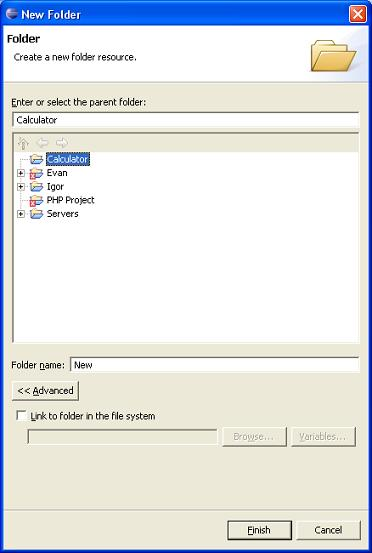

To create a new folder:
In one of the navigation views, right-click the project or folder where you want to create the new folder. A pop-up menu will appear.

Figure 1 Creating a New Folder
Select New > Folder from the pop-up menu.
Enter a name for the new folder and click Finish.